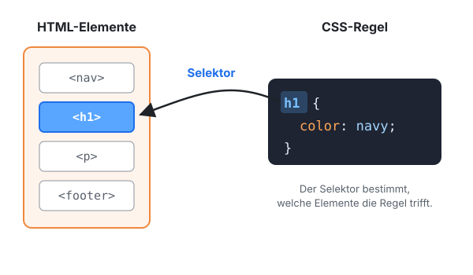
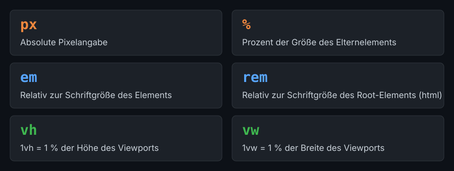

Lektion 2.1 — Teil 2: CSS & Layout
Selektoren, Einheiten & Properties
Lernziele
- Ein externes Stylesheet einbinden und den Aufbau einer CSS-Regel verstehen
- Die häufigsten Selektoren anwenden: Tag-, ID-, Klassen- und Nachkommens-Selektor
- Die Pseudo-Klasse
:hoverund die Pseudo-Elemente::before/::aftereinsetzen - CSS-Einheiten (
px,%,em,rem,vh,vw) unterscheiden - Die wichtigsten Properties für Schrift, Farbe, Display, Sichtbarkeit und Overflow kennen
- Elemente ausrichten und ausblenden
1 — CSS einbinden und Aufbau einer Regel
CSS schreibt man in eine eigene Datei und bindet sie im <head> mit <link> ein. Eine
CSS-Regel besteht aus einem Selektor (welche Elemente?) und
einem Block aus Deklarationen (property: value;):
<link rel="stylesheet" href="css/style.css">/* Selektor { Property: Value; } */
header {
background-color: steelblue;
color: white;
}2 — Common Selectors
Der Selektor bestimmt, auf welche HTML-Elemente eine CSS-Regel wirkt. Die Grafik zeigt das Prinzip: Ein Selektor „zielt“ auf bestimmte HTML-Elemente, die dann die CSS-Regeln bekommen.

Alle folgenden Beispiele beziehen sich auf dieses HTML:
<header id="main-header">
<h1 class="light">..</h1>
</header>
<main>
<article>
<header>
<h2 class="light">..</h2>
</header>
</article>
</main>| Selektor | Beschreibung | Beispiel | Trifft im Beispiel |
|---|---|---|---|
| Tag-Selektor | Auswahl ALLER Elemente über ihren HTML-Tag. | header { .. } | beide <header> |
| ID-Selektor | Auswahl EINES Elements über sein HTML-Attribut id. | #main-header { .. } | nur den äußeren <header> |
| Klassen-Selektor | Auswahl ALLER Elemente über ihr HTML-Attribut class. | .light { .. } | <h1> und <h2> |
| Nachkommens-Selektor | Auswahl ALLER Elemente, die (beliebig tief) innerhalb eines anderen Elements liegen. | main header { .. } | nur den <header> im <article> |
Deep Dive Selectors: developer.mozilla.org/de/docs/Web/CSS/CSS_Selectors
Pseudo-Klasse :hover
Wird nur aktiv, wenn der User die Maus über das Element bewegt. Achtung: Funktioniert nicht auf Mobilgeräten (dort gibt es keinen Mauszeiger).
<nav>
<button>Menü</button>
<ul>
<li><a href="#"></a></li>
<li><a href="#"></a></li>
</ul>
</nav>nav li:hover {
background-color: steelblue;
}Pseudo-Elemente ::before / ::after
Fügt einen Text oder ein Bild vor bzw. nach dem Inhalt eines Elements ein – ohne zusätzliches HTML.
nav button::before {
/* Fügt das Wort "Test" vor dem Button-Inhalt ein */
content: "Test";
/* Fügt ein SVG-Image vor dem Button-Inhalt ein */
content: url("data:image/svg+xml, ...");
}Diese Technik wird z. B. für ein responsives Menü verwendet: Das
„Hamburger“-Icon (☰) des Menü-Buttons wird per ::before als SVG
eingefügt, statt es als Bild ins HTML zu schreiben.
Ein Pseudo-Element wird nur angezeigt, wenn die Property content gesetzt ist
– notfalls als leerer String: content: "";
3 — Units in CSS

| Einheit | Bedeutung | Typischer Einsatz |
|---|---|---|
px | Absolute pixel value – absoluter Pixelwert | Rahmen, kleine feste Abstände |
% | A percentage of the parent element – 100 % ist die Breite des Eltern-Elements | flexible Breiten |
em | Relative to the font size of the element – relativ zur Schriftgröße des Elements selbst | Abstände, die mit der Schrift mitwachsen |
rem | Relative to the font size of the root element – relativ zur Schriftgröße von <html> (meist 16px) | Schriftgrößen, Abstände |
vh | Relative to 1 % of the viewport’s height – 1 % der Fensterhöhe | Vollbild-Bereiche (100vh) |
vw | Relative to 1 % of the viewport’s width – 1 % der Fensterbreite | fensterbreite Elemente |
Deep Dive Units: smazee.com/blog/css-units-px-em-rem-vh-vw-vmin-vmax
Mit rem skaliert die ganze Seite mit, wenn Nutzer:innen im Browser eine
größere Standardschrift einstellen – gut für die Barrierefreiheit.
1.5rem = 1,5 × 16px = 24px.
4 — Common Properties: Schrift, Farbe, Display & Co.
Font / Text
font-family: 'Source Sans Pro', sans-serif;
font-style: normal | italic;
font-weight: normal | bold | 100 - 900;
font-size: 1.5rem;
line-height: 1.5rem;
color: blue | #333;
text-decoration: none | underline;
text-transform: lowercase | uppercase;Color
color: blue | #333;
background-color: steelblue | #16416B;Display / Position
display: block | inline | inline-block | flex | none;
position: static | relative | absolute | sticky | fixed;
/* Funktionieren nur, wenn NICHT position: static */
top: 10px;
bottom: 10px;
left: 5px;
right: 5px;Positionierung behandeln wir ausführlich in Lektion 2.4, display: flex in Lektion 2.5.
Visibility & Overflow
/* Ist das Element sichtbar? */
visibility: visible | hidden;
/* Was passiert mit Inhalt, der größer als der Parent ist? */
overflow: visible | hidden | scroll;Box Shadow
/* x-Versatz | y-Versatz | Unschärfe | Farbe */
box-shadow: 2px 3px 2px silver;Box Shadow Generator: cssmatic.com/box-shadow
5 — Common Properties: Alignment
/* Ich, Inline-Kind, richte mich/andere in der Line Box aus.
Für solche Ausrichtungen wird Flexbox empfohlen (kommt später) */
vertical-align: top | middle | bottom;
/* Ich, Parent-Block, richte den Text meiner Inline-Kinder aus. */
text-align: left | center | right;
/* Ich, Kind-Block, zentriere mich horizontal im Parent-Block */
margin: 0 auto;vertical-alignsetzt man auf das Inline-Element selbst.text-alignsetzt man auf den Eltern-Block; es wirkt auf dessen Inline-Inhalt.margin: 0 autozentriert einen Block mit fester Breite (z. B.max-width: 960px).
6 — Common Properties: Elemente entfernen
/* Variante 1:
Entfernt das Element aus dem normalen Fluss,
sodass andere Elemente den Platz einnehmen können. */
display: none;
/* Variante 2:
Lässt das Element im normalen Fluss,
sodass es weiterhin Platz einnimmt. */
visibility: hidden;
/* Variante 3:
Keine Höhe und versteckter Inhalt */
max-height: 0;
overflow: hidden;display lässt sich nicht animieren. max-height schon –
deshalb verwendet man Variante 3 zusammen mit transition für
auf- und zuklappende Menüs (siehe Lektion 2.9).
Projektschritt
Das erste Stylesheet: Typografie, Farben & Tabelle
Lege css/style.css an und binde es mit <link rel="stylesheet" href="css/style.css"> im <head> ein. Der erste Abschnitt gibt der Seite Schrift, Farben, Hover-Effekte und eine gestaltete Tabelle.
/* ---- 2.1 Selektoren, Einheiten & Properties ---------------- */
html {
scroll-behavior: smooth;
}
body {
font-family: 'Segoe UI', Arial, sans-serif;
color: #2c3e50;
}
header,
footer {
background-color: #2c3e50;
color: white;
}
.brand {
font-size: 1.8rem;
font-weight: bold;
}
#nav-menu a {
color: white;
font-size: 1.2rem;
text-decoration: none;
}
#nav-menu a:hover {
color: #bdc3c7;
}
h1 {
font-size: 2.5rem;
text-align: center;
background: linear-gradient(45deg, #6a7988, #bdc3c7);
}
h2 {
color: #e74c3c;
font-size: 2rem;
}
section {
background-color: #e5e5e5;
box-shadow: 5px 2px 10px rgba(0, 0, 0, 0.2);
}
section:hover {
box-shadow: 5px 4px 20px rgba(0, 0, 0, 0.35);
}
aside {
background-color: #d6ac67;
color: white;
}
a {
color: #34495e;
}
/* Tabelle */
table {
border-collapse: collapse;
background: white;
}
caption {
font-weight: bold;
text-align: left;
}
th {
background: #34495e;
color: white;
text-align: left;
}
/* Kleines Symbol vor jedem Footer-Link */
footer li::before {
content: "→ ";
}📁 Stand nach dieser Lektion: beispiele/2.1/
Häufige Fehler
card { … } sucht ein (nicht existierendes) HTML-Element <card>.
Klassen mit Punkt (.card), IDs mit Raute (#main-header) selektieren.
nav li :hover (mit Leerzeichen) bedeutet „irgendein gehovertes Element innerhalb von li“.
Pseudo-Klassen direkt anhängen: nav li:hover.
Ein Untermenü, das nur bei :hover erscheint, ist auf dem Smartphone nicht bedienbar.
Hover nur für optische Effekte nutzen. Für Menüs einen Button verwenden, der per Klick öffnet.
Die Seite bleibt ungestylt, in der Konsole steht ein 404-Fehler für style.css.
Den relativen Pfad prüfen: Liegt die Datei in css/style.css, lautet das Attribut href="css/style.css".
Aufgaben
Schreibe für das Beispiel-HTML aus Abschnitt 2 je einen Selektor, der (a) nur die <h2>, (b) beide Überschriften, (c) nur den äußeren Header, (d) alle Header innerhalb von <article> trifft.
Setze die Schriftgröße von <html> auf 20px. Wie groß sind nun Überschriften mit 2rem? Was passiert mit 2em in einem Element, dessen Eltern-Element font-size: 1.5rem hat?
Blende auf der Demoseite das <aside> nacheinander mit display: none, visibility: hidden und max-height: 0; overflow: hidden; aus. Beschreibe, wie sich das Layout jeweils verändert.
Füge auf der Demoseite mit ::before vor jeder <h2> ein Symbol ein (z. B. § ). Färbe das Symbol anders, sobald die Maus über der Überschrift ist (h2:hover::before).